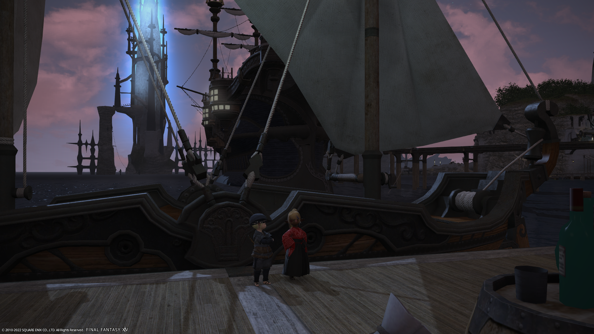
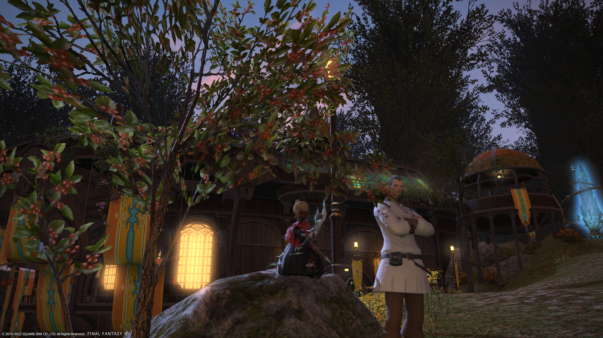

Starting Regions " Hear, Feel, Think. "
The following regions are the three locations you may begin your journey as an adventurer. Here is where it all starts. Where you hear, feel, and think.
La Noscea
Limsa Lominsa -the capital of La Noscea- is a major port city of the continent of Eorzea, located on the island of Vlybrand. Not much of note happens here. Some fishing, some cooking, some mild theivery. At least... I don't think much else happens here.
The leader of Limsa is an ex-pirate, Merlwyb Bloefhiswyn.
The Black Shroud (aka the Twelveswood)
Gridania -the capital of The Black Shroud- is a center for the study of more naturalistic magics, such as conjury.
The leader of Gridania is a padjal, named Kan-E-Senna.
Thanalan
Ul'Dah -the capital of Thanalan- is where the story of Johennes began. A young gladiator began her adventure here. This commercial powerhouse lives and dies by free-market capitalism and monarchy, two rather embarassing facts. But facts, they are.
Nanamo-Ul-Namo rules this city as sultana, with her right hand man, Raubahn.
Though she does not believe in the monarchy she benefits from, she is doing her best to keep the greed of the monetarists in check, for the sake of her city and her people. She takes her power very seriously.